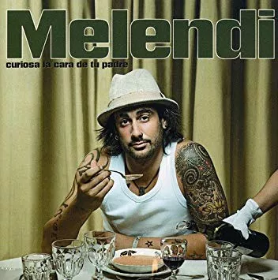

Ere' tan dura Como la piedra de mi mechero
Me asaltan dudas De si te quiero
Y eres tan fría Ay, como el agua Que baja libre De la montaña
Y no lo entiendo Fue tan efímero El caminar de tu dedo en mi espalda dibujando un corazón Y pido al cielo Que sepa comprender Estos ataques de celos que me entran si yo no te vuelvo a ver
Le pido a la luna que alumbre tu vida La mía hace ya tiempo que yace fundida Con lo que me cuesta querer solo a ratos Mejor no te quiero, será más barato Cansado de ser el triste violinista que está en tu tejado Tocando pa'l Inglés siempre desafinao
Eres tan tenue Como la luz que alumbra mi vida La más madura Fruta prohibida Tan diferente Y parecida A la tormenta Que se llevó mi vida Y no lo entiendo Fue tan efímero El caminar de tu dedo en mi espalda dibujando un corazón Y pido al cielo Que sepa comprender Estos ataques de celos que me entran si yo no te vuelvo a ver Le pido a la luna que alumbre tu vida La mía hace ya tiempo que yace fundida Con lo que me cuesta querer solo a rato Mejor no te quiero, será más barato Cansado de ser el triste violinista que está en tu tejado Tocando pa'l Inglés siempre desafinado Le pido a la luna que alumbre tu vida La mía hace ya tiempo que yace fundida Con lo que me cuesta querer solo a rato Mejor no te quiero, será más barato Cansado de ser el triste violinista que está en tu tejado Tocando pa'l inglés siempre desafinado, y Mientras rebusco en tu basura Nos van creciendo los enanos De este un circo que un día montamos Pero que no quepa duda Muy pronto estaré liberado Porque el tiempo todo lo cura Porque un clavo saca a otro clavo Siempre desafinado, y Mientras rebusco en tu basura Nos van creciendo los enanos De este circo que un día montamos Pero que no quepa duda 